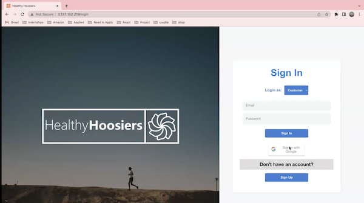
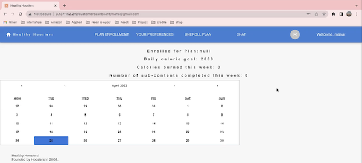
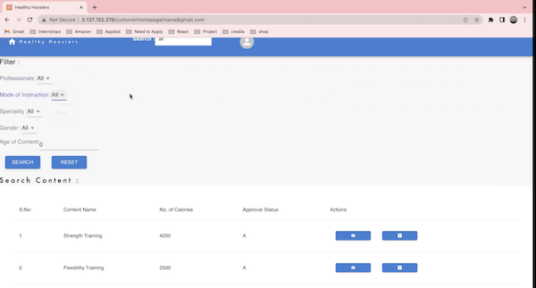

Gowri Shankar Badugu
Software Engineer Intern
check
Featured Projects
Software Engineering - Full Stack Projects
Healthy Hoosiers - Wellness Tracking System


Healthy Hoosiers - Wellness Tracking System is used to shop for fitness and wellness needs and to track their daily progress like number of calories burnt, number of excersises finished, etc. with separate logins for clients, fitness professionals, and administrators. Clinets can register for specific plans or create their own personal fitness and diet plans and track their daily progress. Fitness professionals include both trainers who upload content and plans and dieticians who can provide diet plans. Finally, the administrative users are those who screen and approve the trainer contents, manage the clients, handle customer queries, and so forth.
Tech Stack used is MERN(MongoDB, Express.js, React.js, and Node.js).
View project / case studyHoosiers Delivery Management System
Hoosiers Delivery Management System is a web-based platform that enables users to conveniently manage and monitor their deliveries. We are utilizing a dataset from Kaggle which includes detailed information about orders, customers, and products. Using this application, the user can input the necessary delivery details such as the items to be delivered and their destination. Additionally, they can update the delivery status as delivered or in progress or not delivered. The application also allows for basic CRUD (Create, Read, Update, and Delete) operations to be performed on the delivery data points.
Tech Stack used is MERN(MySQL, Express.js, React.js, and Node.js)
View project / case studyData Mining & Machine Learning Projects
Anime CRP(Classifier, Recommender, and Predictor)

Anime CRP which used anime data set from kaggle and classifies the animes as Beginner, Advanced, or Pro based on number of episodes and genre. The Recommender recommends the user which anime to watch based on his/her preferences like genre, number of episodes, popularity, and ranking. Anime Predictor which predicts the anime the user will be watching next or suggest the next anime to watch based on his/her watch history.
View project / case studySentiment Analysis and Topic Modeling on every day use of ChatGPT!
Research includes collecting the ChatGPT submissions from Reddit social media and analysed each submission using sentiment analysis.
Also done Topic Modeling on the submissions. Above mentioned analysis are done to answer my follwing research questions:
1. For what purpose the ChatGPT is used? Topic Modeling on ChatGPT to know the topics its being used for in daily life.
2. How are people reacting towards using ChatGPT in daily life? Sentiment Analysis to determine the general perception of using ChatGPT daily
View project / case studyWork Experience
Software Engineer Intern
Pringle Robotics Inc.
01-06-2023 - Ongoing
I am currently working as a Software Engineer intern at Pringle Robotics Inc.
Oracle HCM Associate Consultant
Nalsoft Pvt Ltd.
02-10-2020 to 28-02-2022
I have worked as an Oracle HCM Associate Consultant for fusion apps concentrating in Payroll, Core HR, Self-Service, and Oracle Time and Labor. Tech stack mainly used are Pl/SQL and SQL.
Responsibilities include:
- Implemented and demonstrated three full-time Oracle Fusion ERP Systems which include Core HR, Payroll, Absence Management, Self-Service and Time and Labor modules which include retrieving employee salary details and leave data to calculate monthly salary, Indemnity, Social Insurance, deductions etc using SQL & PL/SQL.
- Gathered requirements, understanding the gaps between the oracle system and client business process, mapping the application according to the client requirement with 100% accuracy, user end training.
- Implementation of advanced Reports to fetch, sort, process and highlight the employee data regarding implemented modules for budgeting and reconciliation purposes using SQL & PL/SQL.
- Data Migration for Go live.
- Self-Trained on advanced fast formulas of Oracle Time and Labor which mainly include retrieving the employee biometric data and calculate respective deductions and overtime earnings.
- Trained on Oracle Fusion Core HR, Global Payroll, Absence Management, Time and Labor, Talent Management and respective report implementations using SQL and PL/SQL.
- Gained the hands-on experience in SQL & PL/SQL code optimization and implementing Oracle Fusion ERP System.
Skills acquired
Time & Attendance · Human Resources (HR) · Oracle Reports · Self Service · Requirements Gathering · Functional Training · Data Migration · SQL · Payroll · Java · PL/SQL
Education
Indiana University - Bloomington
Master of Science Data Science, Fall-2022
My course work include:
- Software Engineering
- Data Mining
- Social Media Mining
- Applied Algorithms
- Applied Database Technologies
- Introduction to Statistics